| 原因 | 好發 | 年齡 | 特徵 | ||
|---|---|---|---|---|---|
| Dentigerous cyst (DC) | follicle 分離 | 38,48 | 10 - 30y |
|
|
| Eruption cyst (EC) | Dentigerous 萌發 | 12a, 12b, 34a, ?6 | 10y ↓ | 藍色或紫棕色 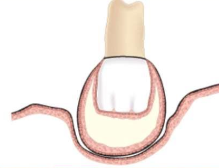 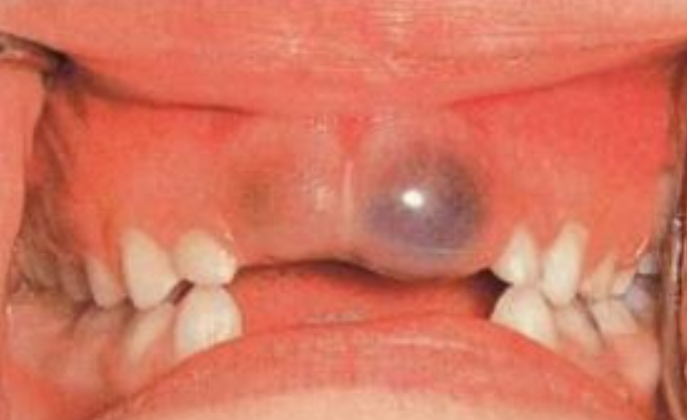 |
|
| Odontogenic Keratocyst cyst (OKC) |
|
下顎骨後端，下齒槽管上方 | 10-40y | 組生齒(40%) | |
| Radiolucent、 MD方向下顎骨吸收，但牙根完整。 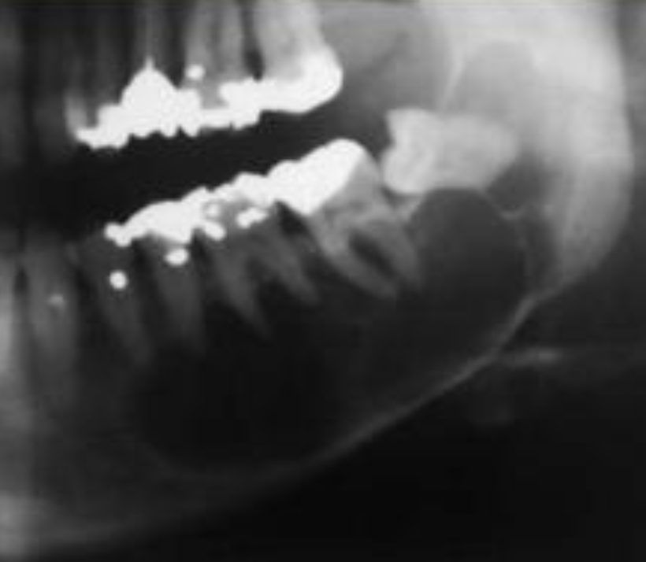 |
|||||
| 4-8 層、副角化(有核)、Basal cell 為 palisaded(柵狀) | |||||
| 高復發 (30%) | |||||
Orthokeratinized Odontogenic cyst (OOC) |
- | 下顎後牙 | 年輕人 | 阻生齒 (66%)、 granule layer 明顯 、 生長慢 |
|
| Gingival Cyst of the newborn | dental lamina rest | 新生兒上顎牙齦 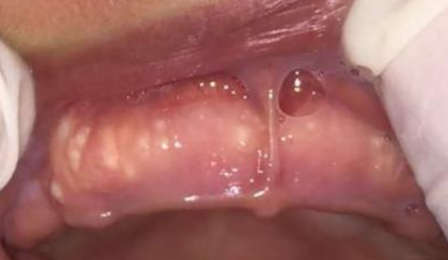 | - | 管腔內含有角質碎屑(keratinaceous debris) 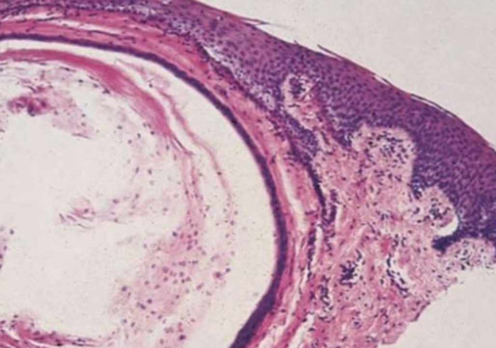 | |
| Gingival Cyst of the adult (LPC 長出來) | 下顎premolar、canine facial 牙齦 | 40-60y | 藍色(bluish)、藍灰色(DeepSkyBlue-gray) 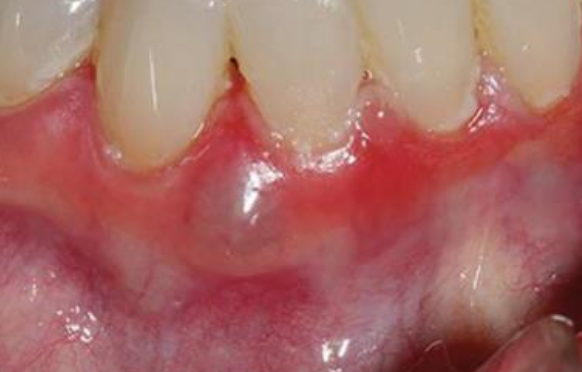 | ||
| focal plaques | |||||
| focal plaques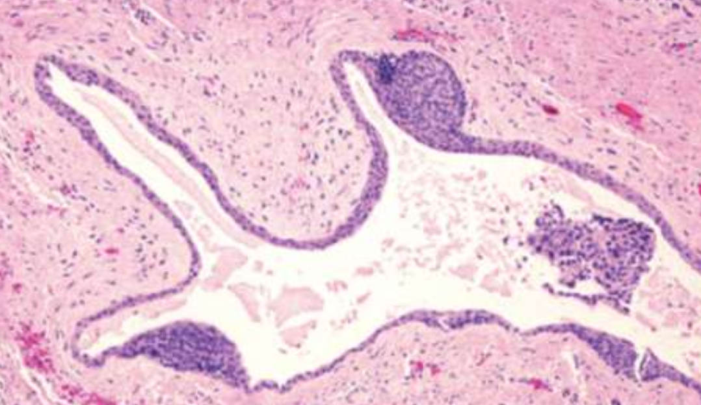 | |||||
| Lateral Periodontal (LPC) | 下顎 premolar、canine、lateral incisor lateral root 表面 | 40-70y | |||
| 類似 OKC，但推開牙齒 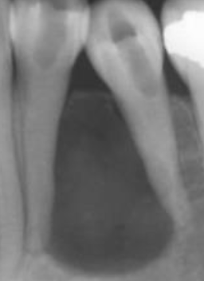 | |||||
| Botryoid Odontogenic Cyst (BOC) | 多囊 LPC | ||||
| Calcifying Odontogenic Cyst ( Gorlin Cyst, COC) |
- | 前牙(65%) 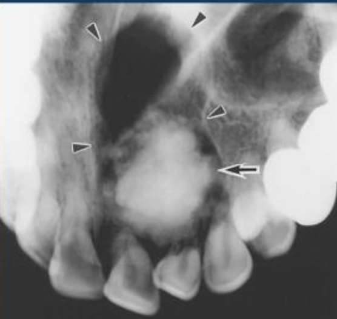 | 20-40y 若有 odontoma，17y 發病 |
未萌發的牙齒(33%)、 阻生齒(66%) | |
| basal cell reverse polarity 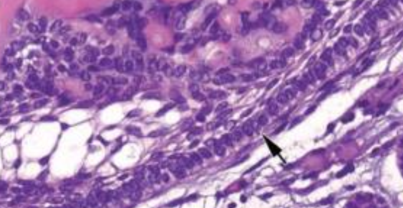 | |||||
| ghost cells (嗜酸無核) 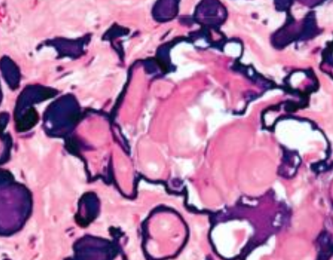 | |||||
| β catenine + | |||||
| Peripheral Calcifying Odontogenic Cyst | COC 長出來 | - | 60-80y | .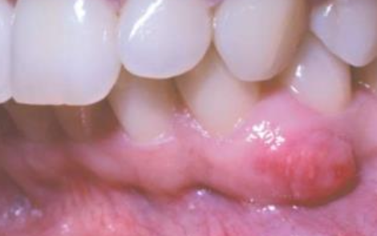 | |
| Glandular Odontogenic Cyst (GOC) | - | 下顎前牙 | 46-51y | 跨中線、無 MAML2 | |
| 復發、局部侵犯性，吃 cortical bone 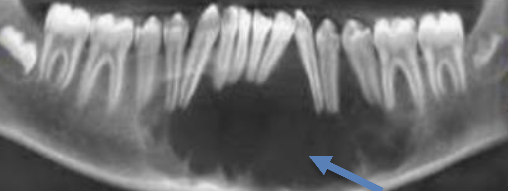 | |||||
| 杯狀細胞, cilia, focal plaques | |||||
Gorlin syndrome
MAL2 讓 MEC 預後好
| 原因 | 好發 | 年齡 | 特徵 | |
|---|---|---|---|---|
| Periapical(radicular) cysts | Rest of Malassez 被刺激 | - | - | true/ periapical cyst 圓形的光通性包圍根尖 |
| 牙根吸收, 2cm ↑ 根管治療無效 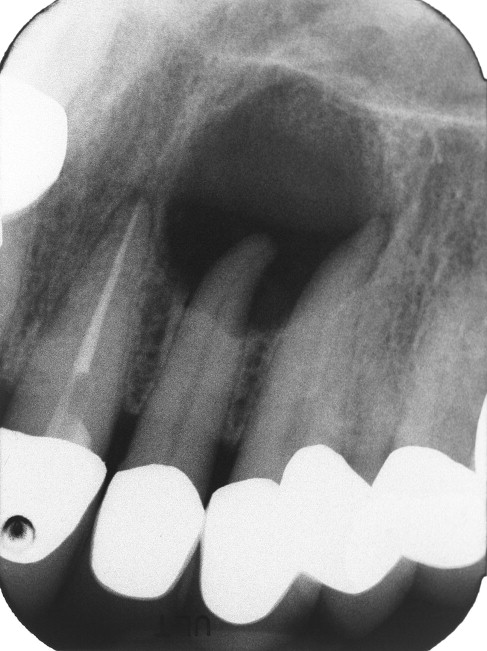 | ||||
| Buccal Bifurcation Cyst | 36, 46 Buccal (兩側 1/3) | 5-13y | - |
|
| 原因 | 好發 | 年齡 | 特徵 | |
|---|---|---|---|---|
| Palatal Cysts of the Newborn | Epstin’s pearl → 融合線的上皮 | 中腭裂(前)、多發性 | - | 白色或黃白色, 角化, 不需治療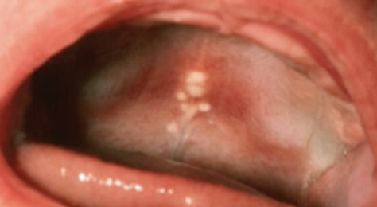 |
| Bohn nodules → 小唾液腺 | 散佈在硬腭軟顎的交界(後)、多發性 | |||
Nasolabial Cyst |
融合線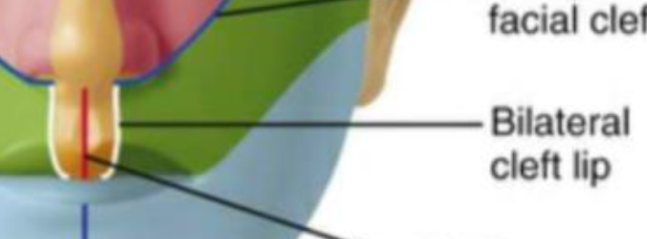 |
上唇中線旁(外側)，軟組織內 | 40-50y | 不痛 |
纖毛上皮, goblet cells, 附近有肌肉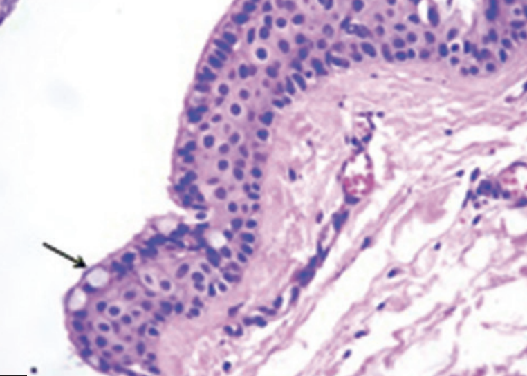 |
||||
facial depression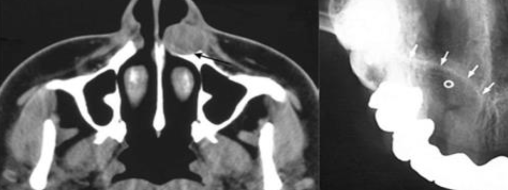 |
||||
Nasopalatine duct cyst |
Nasopalatine duct 上皮的殘留 | 顎部前 | 40-60y | 藍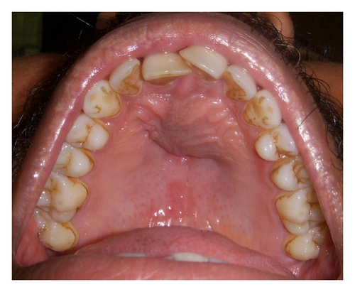 |
牙根吸收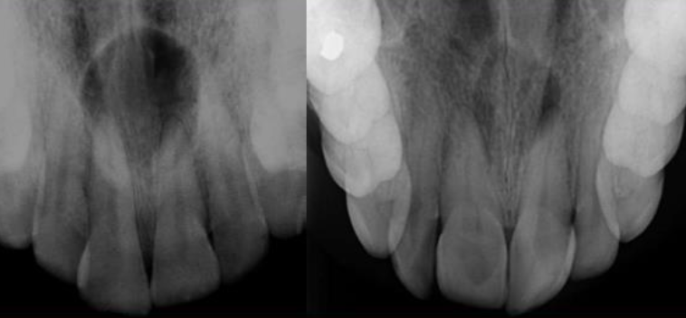 |
||||
| 多種上皮, cilia, goblet cell, 神經和血管可見 | ||||
Incisive canal cyst |
NDC 特例 | Incisive papilla 內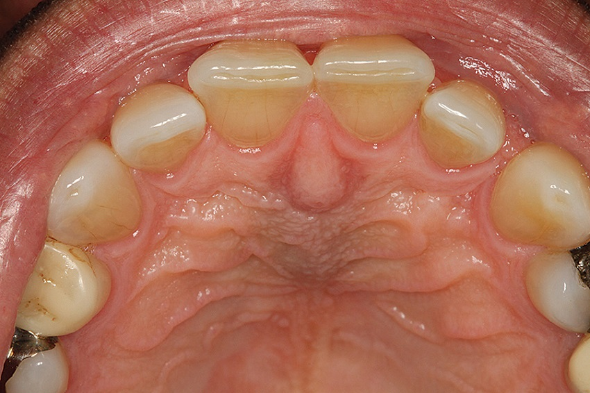 |
φ < 6mm | |
| Median palatal cyst | lateral palatal shelves 融合時將上皮困住 | palatine papilla 後硬顎中線 | 年輕 | 表面是多層鱗狀上皮 |
無神經、血管、cilia、goblet cell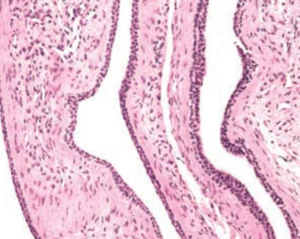 |
||||
Epidermoid Cyst (Infundibular cyst) |
trauma | - | 青春期後 | 凹陷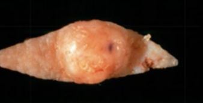 |
| 正角化上皮，爆開會被當異物 → granuloma | ||||
| Gorlin syndrome | 多發性 | |||
| Gardner syndrome | 青春期前 | |||
| Milia | - | 類似 Epidermoid Cyst | - | 小、黃或白、充滿keratin |
| 位於 Superficial dermis | ||||
| Pilar (Trichilemmal) cysts 毛髮囊腫 |
- | 頭皮 (90%)、多發性(70%) | - | 無凹陷開口 |
cholesterol clefts(90%), 淡染, 無 granular layer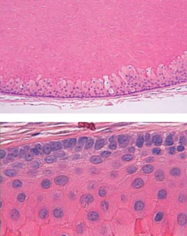 |
||||
| 破裂 → 發炎細胞湧入 cyst → secondary inflammation | ||||
| Dermoid Cyst | Teratoma | 口底中線 | 兒童、年輕 | 多個 germ layer |
正角化上皮, Cyst Wall 有皮膚附屬物(皮脂腺細胞核居中)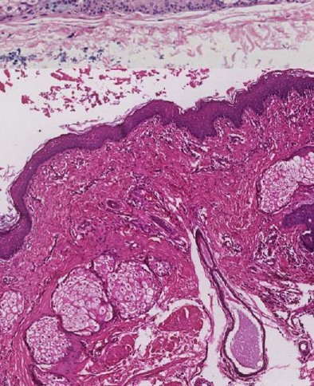 |
||||
| Thyroglossal Duct Cyst 甲狀舌管囊腫 |
甲狀腺殘留 | 脖子中線上、舌骨下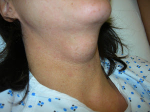 |
20y ↓ (40%) | Cyst wall 上有 Thyroid follicle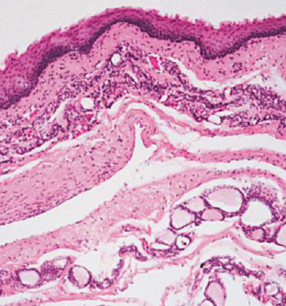 |
| Branchial Cleft Cyst (cervical lymphoepithelial cyst，鰓裂囊) |
branchial arches 殘留 (2nd，95%) | SCM 前/下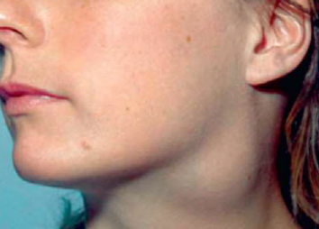 |
10 - 40y | 複層鱗狀、淋巴、發中心(germinal center)。 |
| Oral Lymphoepithelial Cyst | 上皮內陷(invagination)淋巴 → keratin debris | Waldeyer ring, 口底, 舌腹, 軟顎 | 40-50y | φ<1cm 的黏膜下黃白色腫塊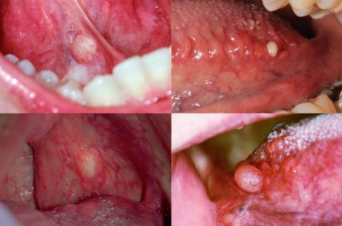 |
| 單發→發育 多發→HIV |
不含rete ridges, 角化不全並脫落填滿空腔, 淋巴組織包圍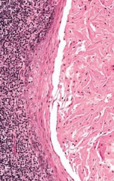 |
魏氏環(Waldeyer ring)
| 原因 | 好發 | 年齡 | 特徵 | |
|---|---|---|---|---|
| Mucocele | 唾腺導管破裂，黏液灑入周遭的軟組織間隙 | 下唇中線旁(易咬到) | 常見 | 透明藍色, 波動感(fluctuant), 高復發 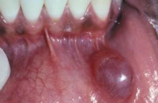 |
| 發炎，granulation tissue 包圍黏液 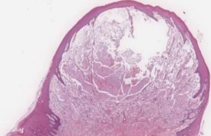 | ||||
| Ranula 蛤蟆腫 | 口底、和舌下腺有關的 Mucocele | - | ||
| Stafne Defect (Stafne Bone Cyst ，骨內囊腫) | 唾液腺擠壓 cortical bone → x-ray 透光 | 後側 mandibular canal | 中年 | 大小固定，邊界明顯 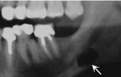 |
| Simple Bone Cyst 單純性骨囊腫 |
空()或液體骨腔 | 肱骨、 股骨近端、 下顎後牙、 下顎聯合區 | 年輕人 | 少疼痛、皮膚感覺異常 |
| 不須積極治療，復發率低 (例外: cementoosseous dysplasia) |
||||
| 侵犯牙根之間區域，不影響鄰牙，近遠心擴張 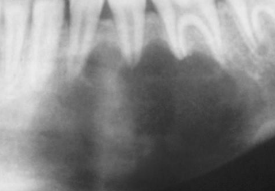 | ||||
| Aneurysmal Bone Cyst 動脈瘤性骨囊腫 |
大小不等骨內堆積被纖維結締組織和活性骨包圍，並充滿血液 | 長骨或脊椎骨、 下顎(2%)後牙 | 30y ↓ | 骨頭腫得快，可能多房，邊界不一定完整 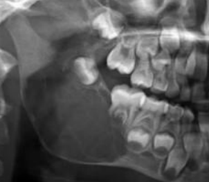 |
| Granulation tissue: 巨噬細胞蝕骨 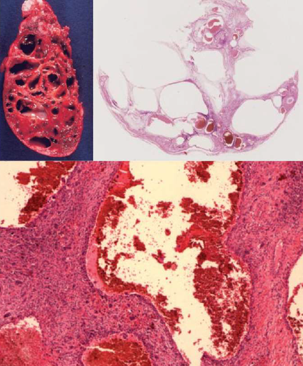 | ||||
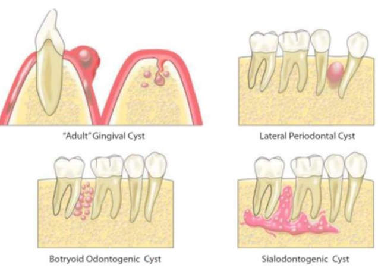
- COC 在前區
- BOC = 多囊 LPC → 在 premolar
- Slaodontogenic Cyst (GOC) 在前牙跨中線